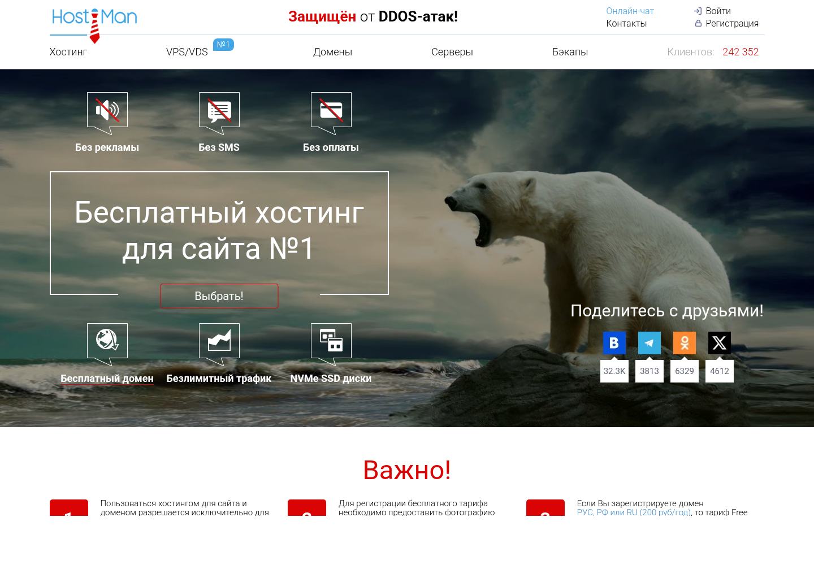

Пошаговая инструкция · ISPmanager без команд
HostiMan Free + *.h1n.ru + SSLКак бесплатно разместить портфолио на HostiMan
Получить технический домен, включить Let’s Encrypt, загрузить ZIP через ISPmanager и установить сайт из браузера.
Важно до регистрацииДля бесплатного тарифа HostiMan требует фотографию документа на фоне сайта. Альтернатива на их странице — зарегистрировать домен за 200 ₽/год либо платить 80 ₽/месяц.
Технически подходит: PHP 8.3, MySQL, 1 ГБ, бесплатный домен *.h1n.ru и SSL.
Проверено по сайту HostiMan
Что вы получаете

Входит
- до 2 сайтов;
- 1 ГБ NVMe;
- PHP и MySQL;
- домен *.h1n.ru;
- SSL и резервные копии.
Условия
- верификация личности;
- 1 Free-тариф на человека;
- вход раз в 30 дней;
- ограниченные ресурсы;
- только легальный контент.
Не пропускайте ежемесячный вход. Пользовательское соглашение разрешает отключить услугу и удалить её через 15 дней, если владелец не входил в my.hostiman.ru не реже раза в 30 дней.
Весь путь
Девять действий
1Зарегистрироваться и активировать Free
2Записать домен вида name.h1n.ru
5Создать пустую MySQL-базу
6Загрузить ZIP в папку www
7Переместить файлы в папку домена
9Войти в admin.html и скачать копию
Шаг 1
Активируйте бесплатный тариф
- Откройте https://hostiman.ru/free-hosting.
- Нажмите «Выбрать» и зарегистрируйтесь.
- Выберите один из способов активации, показанных HostiMan.
- Дождитесь письма с доступом к услуге и ISPmanager.
- Сохраните логин и пароль в менеджере паролей.
https://hostiman.ru/free-hosting
Бесплатно не означает анонимно: изучите условия передачи фотографии документа до регистрации. Если они вам не подходят, выберите SpaceWeb либо платный хостинг.
Не отправляйте фотографию или пароль кому-либо кроме официального интерфейса HostiMan, адрес которого проверен в браузере.
Шаги 2–3
Найдите домен и выберите PHP
- Из личного кабинета откройте управление услугой и войдите в ISPmanager.
- Откройте WWW-домены.
- Запишите бесплатный адрес вида name.h1n.ru.
- Выделите домен и откройте его настройки.
- Выберите PHP 8.3 в режиме, предложенном панелью.
Корневая директорияwww/name.h1n.ru
PHP на HostiMan работает через LSPHP. Никакой Node.js или постоянно работающий процесс этому сайту не нужен.
Шаг 4
Включите бесплатный SSL
- Вернитесь в интерфейс управления услугой.
- Откройте раздел SSL.
- Выберите генерацию Let’s Encrypt.
- Укажите технический домен *.h1n.ru и подтвердите.
- После выпуска откройте сайт с https://.
https://name.h1n.ru/
Продолжайте только без предупреждения браузера. Установочный и администраторский ключи нельзя передавать по незашифрованному HTTP.
Если раздел SSL находится не в ISPmanager, откройте именно «Интерфейс управления услугой»: так описывает действие база знаний HostiMan.
Шаг 5
Создайте пустую базу
- В ISPmanager откройте Базы данных.
- Нажмите «Создать базу данных».
- Используйте основную MySQL 5.7 или MySQL 8, доступную на Free.
- Создайте пользователя и сильный пароль.
- Запишите полные имена базы и пользователя.
Пользовательиз ISPmanager
Нужна новая пустая база. phpMyAdmin и ручной импорт не требуются.
Шаг 6
Распакуйте ZIP в папке www
- Откройте Менеджер файлов.
- Перейдите в папку www, где видна папка name.h1n.ru.
- Загрузите portfolio-php-mysql.zip.
- Выделите архив: Архив → Извлечь.
📁 www
├── 📁 name.h1n.ru ← существующий корень сайта
├── 📁 public_html ← появится из ZIP
├── 📁 private ← останется здесь
└── 🔑 INSTALL-KEY.txt
Не перемещайте private в папку домена. Она специально должна остаться рядом с name.h1n.ru и быть недоступной посетителям.
Шаг 7
Переместите файлы в домен
- Откройте появившуюся папку public_html.
- Выберите все файлы, включая скрытые .htaccess и .user.ini.
- Нажмите Переместить.
- Укажите существующую папку /www/name.h1n.ru.
- Удалите только стандартную заглушку index.html, если панель не заменила её новым файлом.
📁 www
├── 📁 name.h1n.ru
│ ├── index.html
│ ├── admin.html
│ └── install.php
├── 📁 private
└── 🔑 INSTALL-KEY.txt
Пустую папку public_html после переноса можно удалить. Права по рекомендации HostiMan: папки 755, файлы 644; права 777 не ставьте.
Шаг 8
Запустите установку
https://name.h1n.ru/install.php
Пользовательиз ISPmanager
Установить сайт
После успеха install.php и серверная копия ключа удалятся автоматически.
Если страница пишет, что private не найден, вернитесь к схеме на странице 9: private должна лежать в /www рядом с папкой домена.
Шаг 9
Войдите и сохраните копию
https://name.h1n.ru/admin.html

- Войдите ключом из INSTALL-KEY.txt.
- Замените ключ через админку и сохраните новый.
- Измените демо-контент.
- Скачайте резервную копию JSON.
- Удалите ZIP и файл ключа с хостинга.
Сессии короткие, доступ можно отозвать, публикации сохраняются в истории.
Создайте календарное напоминание входить в my.hostiman.ru каждые 25 дней.
Проверка и проблемы
Финальный список
- https://name.h1n.ru открывается без предупреждения;
- видны главная и четыре раздела;
- админка принимает только правильный ключ;
- изменения публикуются;
- резервная копия скачивается;
- install.php больше не открывается;
- private лежит вне папки домена;
- ZIP удалён, ключ сохранён у владельца.
403Проверьте корневую директорию WWW-домена и наличие index.html.
500Проверьте PHP 8.3 и журнал ошибок; отправьте разработчику снимок без секретов.
Не найдена privateОна должна находиться /www/private, рядом с /www/name.h1n.ru.
Не входитПроверьте ключ без пробелов; через 15 минут войдите снова.
Официальные источники
На чём основана инструкция
Версия инструкции: 9 сентября 2026 года. Перед передачей персональных документов ещё раз прочитайте действующие условия на сайте HostiMan.